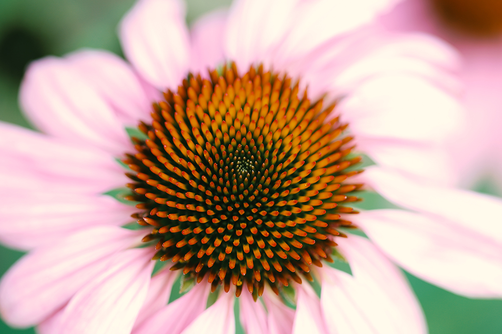
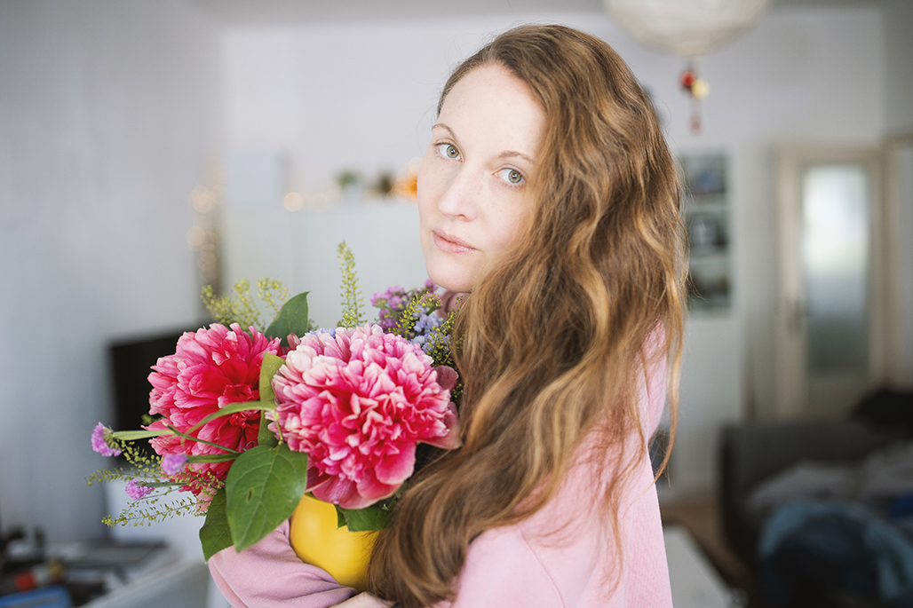

About - Stephanie Palm
Hello everyone!
Ich lebe in Berlin. Hier bin ich geboren und die meisten meiner Bilder sind auch hier entstanden. In so einer großen Stadt gibt es viele große und kleine Dinge zu sehen und zu erleben. Fotos habe ich schon immer gerne gemacht. Meine erste Spiegelreflexkamera habe ich 2013 zum Geburtstag geschenkt bekommen.
Die Canon EOS 600D hat mir als Einsteigermodell viel Freude gemacht. Zunächst waren es vor allem die kleinen Dinge, die mich am meisten faszinierten. Viel Zeit habe ich mit der Makrofotografie verbracht. Die Natur bietet vollkommene Schönheit und zeigt zu jeder Jahreszeit ein anderes Gesicht.
Fotobearbeitungsprogramme benutze ich bereits seit knapp 16 Jahren und sie sind ein wichtiger Bestandteil meiner Arbeit. Mit der Zeit erschließt man sich im Prozess des Lernens immer mehr Bereiche, Techniken und das Equiptment erweitert sich. Mittlerweile fotografiere ich mit der Canon EOS R6.
Für dich fotografiere ich Portraits, Hochzeiten, Paare, Haustiere, Events und Interior Design.
Schreib mir eine Nachricht